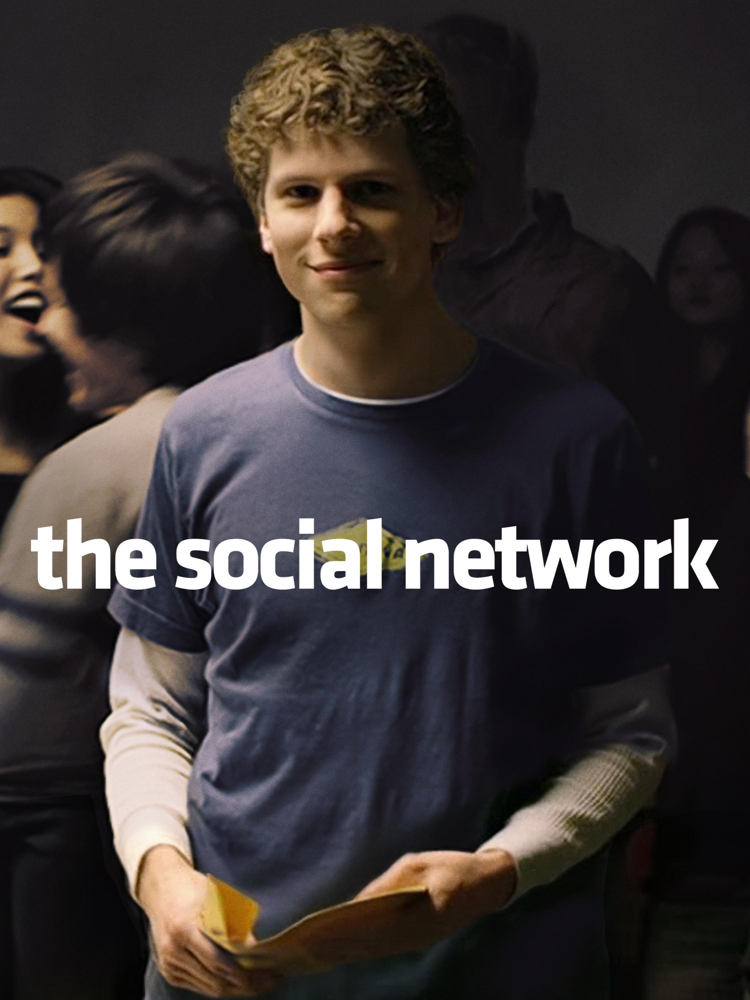

The Social Network

La película
The Social Network es una película dramática estrenada en 2010 y dirigida por David Fincher. Cuenta la historia de la creación de Facebook por Mark Zuckerberg durante sus años universitarios en Harvard, así como los conflictos personales y legales que surgieron durante su desarrollo.
¿Por qué la recomendamos?
Recomendamos esta película porque está relacionada con el mundo de la tecnología, las redes sociales y la evolución de Internet. Permite conocer cómo una idea puede convertirse en una de las mayores plataformas digitales del mundo y cómo la innovación tecnológica puede generar conflictos y cambios en la sociedad.
Información
- Género: Drama biográfico
- Tema: Tecnología, redes sociales y emprendimiento
- Director: David Fincher
- Año: 2010
- Tipo de recomendación: Actualidad tecnológica
Conexión con la actualidad
Actualmente, las redes sociales forman parte de nuestra vida cotidiana y tienen una gran influencia en la comunicación, la información y las relaciones personales. The Social Network permite reflexionar sobre el nacimiento de estas plataformas, el poder de las grandes empresas tecnológicas y las consecuencias sociales de la revolución digital.